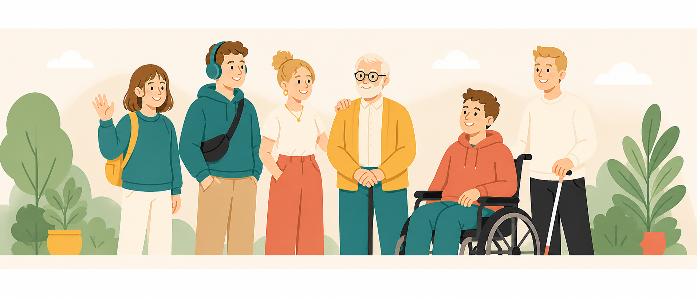
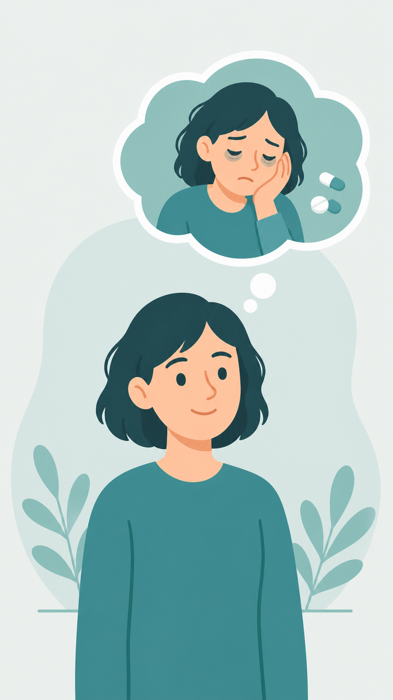
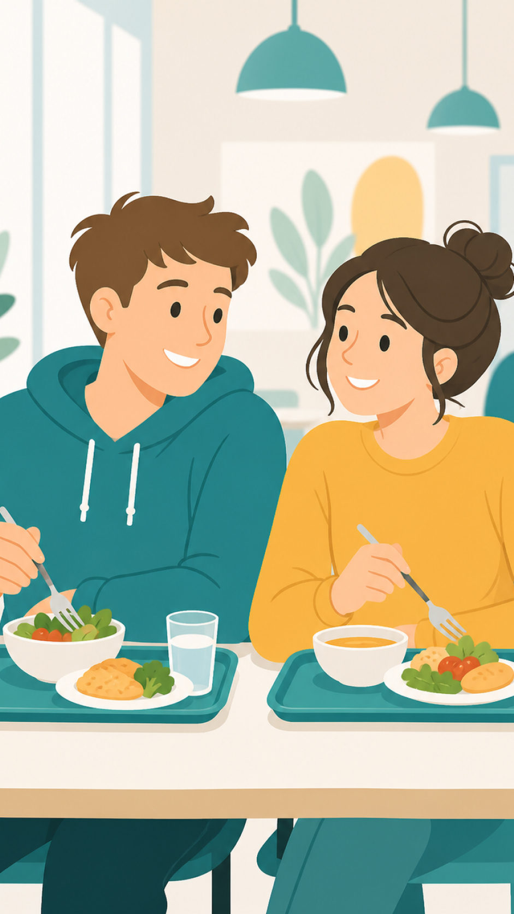
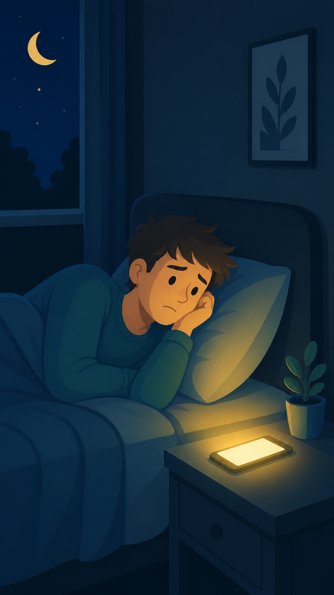
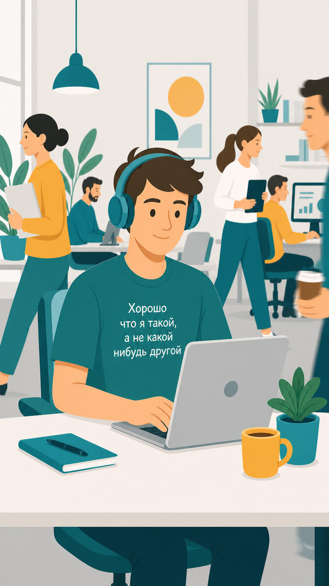

5 простых идей, которые сделают ваш коллектив сильнее — и безопаснее для каждого

Иногда кажется, что «не такой как все» коллега усложняет работу. Но исследования показывают: нейроразнообразие даёт неочевидные преимущества и бизнесу, и каждому члену команды. Каждый ценен — и каждый может оказаться по ту сторону.
Человек с депрессией может быть улыбчивым, с РАС — очень общительным, с дислексией — часами пытаться понять инструкцию молча. Женщина в менопаузе вряд ли расскажет всем о своём состоянии, но переживает его очень остро.
За каждым рабочим промахом попробуйте увидеть не лень и некомпетентность — а состояние, нехватку поддержки, непонимание.


Сломанная нога срастётся. РАС, дислексия, СДВГ — нейроотличия, которые с человеком навсегда. Принять помощь при временном ухудшении эмоционально легче. Признаться в «базовых отличиях» от большинства — труднее.
Попробуйте побольше узнать о коллеге. Сядьте рядом на обеде, прямо спросите, как он себя чувствует и нужна ли помощь. Скажите, что вам можно написать или позвонить.
Неписаные правила — время обеда, звонки в выходные, сборы на дни рождения — кажутся очевидными. Но для человека с тревожностью, РАС или просто новичка их нарушение выглядит как странность или нелояльность.
Проговорите или пропишите все неформальные правила и ожидания. Проведите экскурсию для новичков — объясните, кто чем занимается и к кому по каким вопросам обращаться.


Одни легко запоминают речь, другие выполнят только письменную инструкцию. Опенспейс для одних — кайф, для многих — пытка и потеря эффективности.
Спросите сотрудника: как ему удобно получать задачи — письменно или устно? Как оборудовать рабочее место? Как понять, что нужна помощь? Если неудобно — КПД снижается в разы.
Компании, которые дают работу разным людям, не просто делают доброе дело — они выигрывают. Микроклимат в таких коллективах здоровее. Сотрудники знают: если со здоровьем что-то случится, их не бросят.
Обычные сотрудники получают возможность проявить не только деловые качества, но и человеческие. Моральный дух напрямую влияет на производительность и репутацию организации.